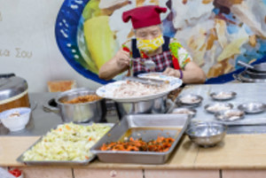
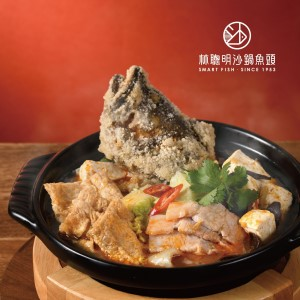
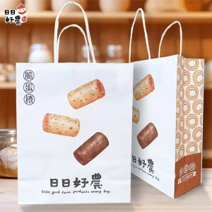

| 劉里長雞肉飯 | |
紅到日本去最有名的嘉義雞肉飯老店《劉里長雞肉飯》，算是來嘉義吃雞肉飯的入門款店家，《劉里長雞肉飯》有名到讓全家與7-11都上架它們家的雞肉飯，還有廠商要合作到日本展店，老闆之前是真的當過里長，才會取名《劉里長雞肉飯》，在網路上就有超過8000則評論，是所以嘉義雞肉飯中討論度最高的一家家，只是評價蠻兩極，平日或非尖峰時段來吃是最好。 資料來源：布雷克的出走旅行視界 |
 |
| 林聰明沙鍋魚頭 | |
林聰明沙鍋魚頭傳承三代，至今超過一甲子，堅持品質、用心料理成為嘉義人氣美食。推薦的「林聰明沙鍋龍虎斑魚頭獨享鍋」特別推出冷凍個人鍋調理包，讓民眾在家也可輕鬆享用嘉義特色美食。食材嚴選永安 石海域契作的龍虎斑魚頭，將魚炸至金黃色，外表香酥、肉汁美味。濃濃的高湯佐以精選的大白菜、黑木耳、蝦米、非基改豆腐、非基改豆皮、蒜頭、辣椒、蔥、豬肉片及獨家配方，再加上特製的聰明沙茶醬，香濃醇口、有點辣又不會太辣的味道，讓人一嚐成主顧。 資料來源：嘉義好旅行 Top |
 |
| 日日好農脆蛋捲 | |
日日好農創立於105年，主要製造銷售台灣農產相關加工，其中包含了三大核心產品「脆蛋捲」「低溫烘焙果乾」「農特產」等三項。日日好農秉持「吃得健康」心願，認為上天給予人類土地，若是我們善待自然，自然必會回饋我們美味的食材。我們也尊重四季時令的給予，相信土地是充滿力量的。我們透過最了解土地的農夫,他們出產最好最天然的農作物。我們特地將台灣這麼多美好的食材集合加工成為美味的優良產品，來跟大家一起分享我們的農產生活。 資料來源：日日好農官網 Top |
 |